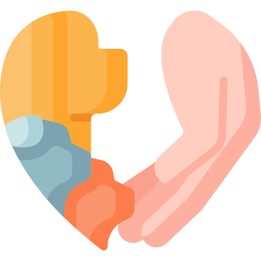

<style>
  .nav-h {
    /*控制導覽列的高度*/
    min-height: 90px;
    padding: 0;
    min-width: 400px;
  }


  @media screen and (max-width: 1200px) {
    nav ul li * {
      font-size: 1rem !important;
    }
  }

  .myNavBg-0 {
    background-color: rgba(255, 255, 255, 0.7);
    transition: background 0.4s linear;
  }

  .myNavBg-1 {
    background-color: rgba(255, 255, 255, 1) !important;
    transition: background 0.2s linear;
  }


  .navbar * {
    white-space: nowrap;
    vertical-align: middle;
  }

  .nav-item img {
    width: 28px;
  }

  /* 後面加換行 */
  .br::after {
    content: '\A';
    white-space: pre;
  }

  @media screen and (max-width: 992px) {
    .nav-item img {
      display: none;
    }

    .nav-item .br::after {
      display: none;
    }
  }

  .navbar-brand span {
    font-size: 30px;
    font-weight: 500;
    color: #515151;
    margin: auto 6px;
  }

  .navbar-light .navbar-nav .nav-link,
  .navbar-light .navbar-nav .show>.nav-link {
    font-size: 20px;
    color: #515151;
  }

  .dropdown-toggle::after {
    content: none;
  }
</style>

<!-- 導覽列淡入淡出效果 -->
<script>
  $(window).scroll(function () {
    let scrollTop = $(this).scrollTop();
    //let winHeight = $(window).height();
    if (scrollTop > 60) $('.myNavBg-0').addClass("myNavBg-1");
    else $('.myNavBg-0').removeClass("myNavBg-1");
  });

  $(".myNavBg-0").hover(function () {
    $('.myNavBg-0').addClass("myNavBg-1");
  }, function () {
    let scrollTop = $(window).scrollTop();
    //let winHeight = $(window).height();
    if (scrollTop <= 60) $('.myNavBg-0').removeClass("myNavBg-1");
  });
</script>

<!-- 導覽列內容 -->
<nav class="navbar navbar-expand-lg navbar-light myNavBg-0 fixed-top nav-h">
  <div class="container mb-0 text-center">
    <a class="navbar-brand" href="#"><span>毛起來找</span></a>
    <button class="navbar-toggler" type="button" data-bs-toggle="collapse" data-bs-target="#navbarSupportedContent"
      aria-controls="navbarSupportedContent" aria-expanded="false" aria-label="Toggle navigation">
      <span class="navbar-toggler-icon"></span>
    </button>
    <div class="collapse navbar-collapse" id="navbarSupportedContent">
      <ul class="navbar-nav mx-auto mb-2 mb-lg-0">
        <li class="nav-item mx-2">
          <a class="nav-link" aria-current="page" href="#"><span class="br"></span>線上通報</a>
        </li>
        <li class="nav-item mx-2">
          <a class="nav-link" href="#"><span class="br"></span>寵物領養</a>
        </li>
        <li class="nav-item mx-2">
          <a class="nav-link" href="#"><span class="br"></span>寵物協尋</a>
        </li>

        <li class="nav-item dropdown mx-2">
          <a class="nav-link dropdown-toggle" href="#" id="navbarDropdown" role="button" data-bs-toggle="dropdown"
            aria-expanded="false"><span class="br"></span>會員中心
          </a>
          <ul class="dropdown-menu" aria-labelledby="navbarDropdown">
            <li><a class="dropdown-item" href="#">Action</a></li>
            <li><a class="dropdown-item" href="#">Another action</a></li>
            <li>
              <hr class="dropdown-divider">
            </li>
            <li><a class="dropdown-item" href="#">Something else here</a></li>
          </ul>
        </li>
        <li class="nav-item mx-2">
          <a class="nav-link disabled" href="#" tabindex="-1" aria-disabled="true"><span class="br"></span>地圖</a>
        </li>
      </ul>
      <ul class="navbar-nav mb-2 mb-lg-0">
        <li class="nav-item">
          <a class="nav-link" aria-current="page" href="#">會員登入</a>
        </li>
        <li class="nav-item">
          <a class="nav-link" href="#">加入會員</a>
        </li>
      </ul>
    </div>
  </div>
</nav>
<!-- 導覽列內容 END -->
<!-- 此處是保留給導覽列的空間 -->
<div class="nav-h"></div>